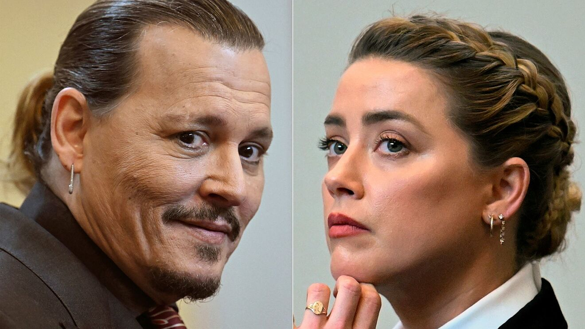

John "Johnny" Christopher Depp II é um ator, músico, produtor de cinema e diretor norte-americano, três vezes indicado ao Oscar de Melhor Ator, e vencedor de um Globo de Ouro
Amber Heard, que pediu o divórcio em maio de 2016, contou ao júri que tomou a decisão por temer pela própria vida:
"Eu sabia que tinha que deixá-lo. Eu sabia que não iria sobreviver se não o fizesse. Eu estava morrendo de medo de aquilo terminar de uma forma muito ruim para mim... A violência agora era normal, e não mais a exceção. Eu acredito que ele teria ido longe demais e eu não estaria mais aqui"
Questionada pela advogada de Depp, Camille Vasquez, sobre as acusações de agressão física e por qual motivo não existem registros médicos, Heard disse que não consegue se lembrar dos fatos em ordem cronológica. A atriz reconheceu que não procurou ajuda médica para nenhum dos supostos ferimentos causados por Depp, mas afirma que eles de fato aconteceram e que o astro de Hollywood foi o responsável.
Veja também: Advogada vira meme e novos depoimentos: Caso Depp x HeardVoltar